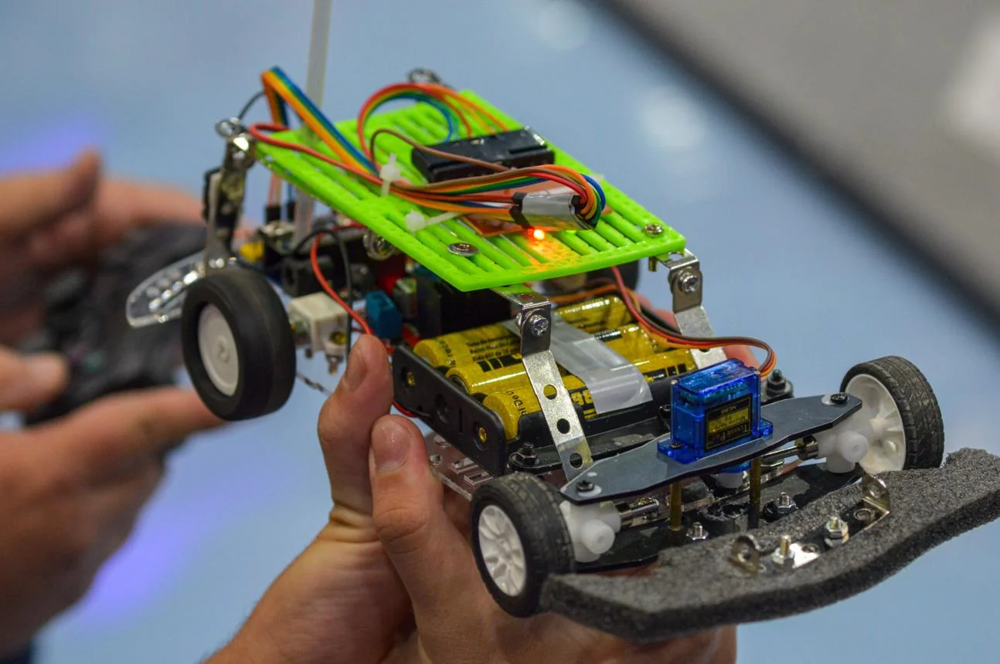

ENGINEERING · ROBOTICS · DESIGN
From an idea to a working system.
A record of engineering projects.
CADPYTHONROBOTICSFABRICATION

PROJECT JOURNAL
Designed · Built · Tested · ImprovedWHAT I WORK ON
Engineering disciplines
Mechanical, electrical and software engineering come together in working systems. Browse by area of interest.
PROJECT JOURNAL
Selected projects
ENGINEERING PROCESS
How projects develop
01
Define
Understand the objective, requirements and constraints.
02
Design
Explore alternatives through CAD, calculations and prototypes.
03
Build
Fabricate, assemble, wire and implement the software.
04
Test
Measure performance and investigate failure modes.
05
Improve
Revise the design using evidence from the results.
BEHIND THE PROJECTS